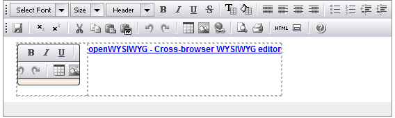

Descrizione dei requisiti
L’esigenza principale consiste nella possibilità di implementare una
gestione di documenti
I
documenti
dovranno essere editabili dalle
persone di Kion
direttamente dal
KIM
e dovranno essere presentati agli
utenti
come pagine html.
Definiamo
Knowledge base
l’insieme di documenti e di classificazioni gestiti dal sistema.
La Knowledge base deve essere disponibile a tutti gli utenti abilitati all’accesso al
CT
. Non si vuole implementare, per ora, delle politiche di abilitazione (disabilitazione) basate sui ruoli dell’utente: chi entra può vedere tutti i documenti della knowledge base;
Inserimento, modifica e cancellazione documenti
E’ indispensabile creare una maschera che permetta ai
redattori
la gestione in modo agevole dei documenti. La maschera dovrebbe prevedere due modalità di utilizzo:
-
Edit inline
La maschera dovrebbe essere simile a quella presente nella figura sotto:

L’edit diretto dal Kim non necessita di tutte le possibilità presentate in figura ma basta avere:
-
Grassetto
-
Corsivo
-
Liste puntate
-
Immagini
-
Stili di paragrafo (titolo 1, titolo2 ecc)
-
link
-
tabelle semplici
-
Importazione
di documenti esistenti
L’edit inline è una modalità di utilizzo comoda per creare dei documenti piccoli (per esempio le faq) ma rende difficile la gestione di documenti complessi (per esempio i documenti di processo).
Per questo motivo, è necessario avere la possibilità di importare dei documenti (word/pdf) per permettere ai redattori la possibilità di creare i documenti offline e, una volta terminato, fare l’
upload del documento
che sarà
convertito
nella sintassi richiesta dal KIM
.
Data l’elevata differenza tra i formati word/pdf e il formato html è accettabile immaginare che, almeno nella fase iniziale, l’import dei documenti
complessi sia effettuato manualmente da un
operatore
che effettuerà anche un
controllo
sul risultato finale.
Per i documenti
più semplici (per esempio l’help associato ai messaggi di Esse3), è necessario implementare un servizio (web service?) che permetta di
alimentare il sistema dall’esterno
.
Caratteristiche comuni a tutti i documenti
Tutti i
documenti
hanno in comune le seguenti caratteristiche:
Tagging dei documenti
Per ogni documento è necessario poter definire diverse modalità di
classificazione
.
Le
classificazioni
individuate
finora
sono:
-
processo
/i di appartenenza – permette di
creare un’associazione
tra un documento e uno o più processi;
-
tipologia di documento
– per esempio:
manuale
,
documento di processo
,
faq
,
howto
ecc;
-
soluzioni/howto/help online – è una classificazione che deve permettere di associare ad un messaggio applicativo di Esse3 uno o più documenti gestiti dalla knowledge base;
-
altri
tag
a scelta del redattore – in questo caso un tag è un insieme di parole (per esempio posso associare un documento ad una versione di Esse3);
Tipologia
Messaggi Esse3
Documenti
Processi
Altri Tag liberi
Navigazione della Knowledge base
Ricerca
Una delle principali modalità di accesso è tramite la maschera di ricerca descritta in questo documento. I risultati ottenuti devono essere filtrabili per:
Navigazione dei documento di processo
I documenti di processo devono essere accessibili anche tramite navigazione per Area processo. Quindi, a partire dal Menu, è necessario modificare il link “Documenti” affinché permetta di raggiungere un documento di processo (in uno o più passaggi).
Navigazione da messaggio di Esse3
Deve essere possibile risalire ai documenti a partire da messaggi di ESSE3.